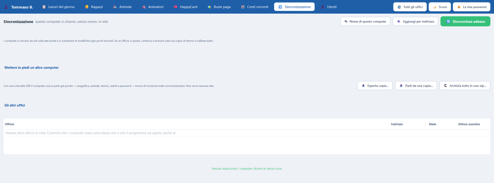

Chi c'è in rete
Tre banchi, tre copie degli stessi dati
🏦
Banca
conti correnti e HappyCard
💶
Ufficio buste paghe
lavori del giorno ed emissione delle buste
📋
Ufficio del lavoro
lavori del giorno, ragazzi, aziende e animatori
Solo rete locale
Come si parlano
Non serve internet: basta che i computer siano sulla stessa rete locale. Ognuno annuncia sé stesso e si scambia con gli altri solo quello che è cambiato; quando uno spento torna acceso, si riallinea da sé.
Se la stessa persona viene cambiata su due computer prima che si parlino, il disaccordo compare nella scheda Sincronizzazione e si sceglie quale versione tenere.
PdRManager — Sincronizzazione
{kind=link}

Da sapere: Chiunque sia su quella rete con questo programma può sincronizzarsi: non c'è nessun codice da passare. Finché la rete è quella di casa nostra va bene; se un giorno si aprisse agli ospiti, è il primo punto da rimettere in discussione.
Da zero
Mettere in piedi un computer nuovo
- Dal computer che ha i dati si esporta una copia iniziale.
- Sul computer nuovo si apre il programma e si carica quella copia al primo avvio.
- Si entra con gli utenti e le password di provenienza: gli accessi viaggiano con tutto il resto.
Attenzione: Il file dei dati veri delle famiglie non si copia e non si sincronizza: sta solo sul computer del coordinamento. Sugli altri quei dati non esistono.